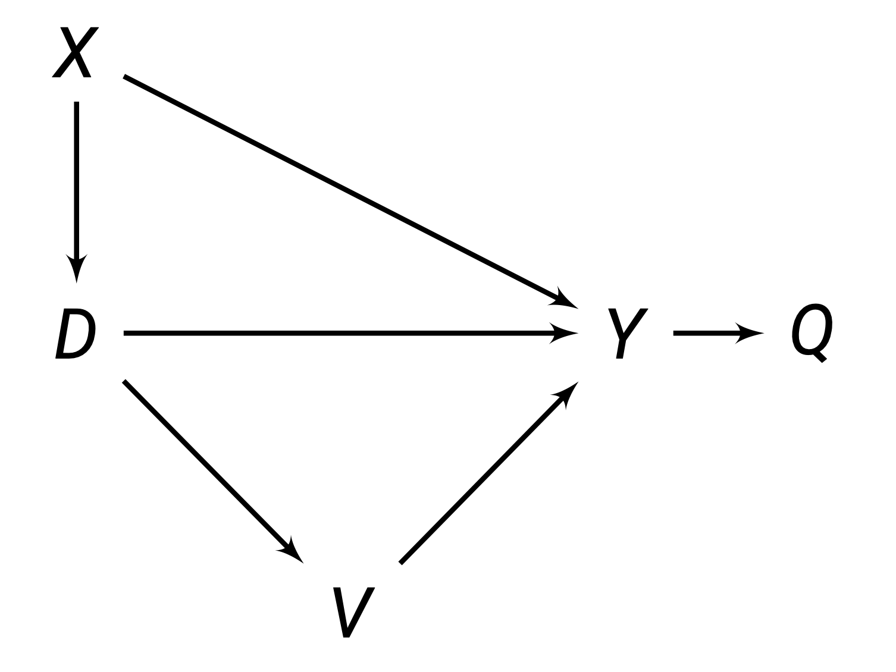
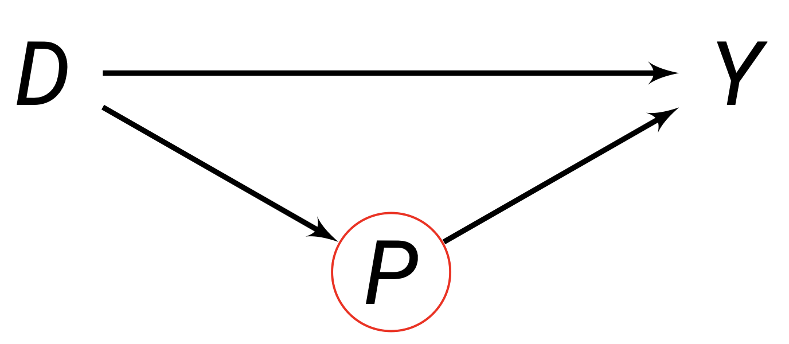
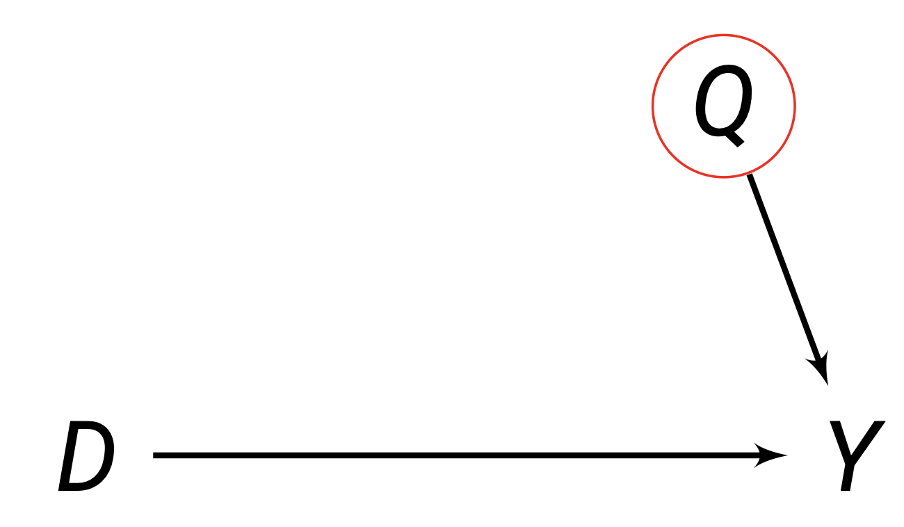
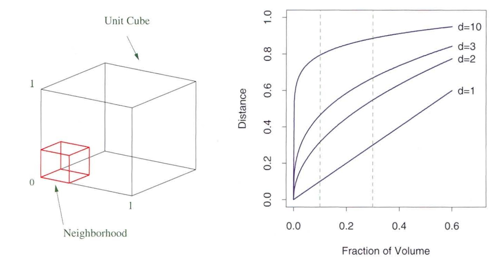

library(tidyverse)This chapter introduces the selection on observables framework, which allows us to identify causal effects by controlling for observable pre-treatment covariates. We discuss the main estimators, including subclassification, regression, and matching, as well as more advanced topics in sensitivity analysis and partial identification.
Identification
Graphical Identification
Without randomisation, we need some other way to account for pre-treatment covariates that may be confounding and causing selection bias. Controlling for a set of nodes/confounders X can identify the causal effect of D \rightarrow Y, if:
- No node within set X is a descendant of D (no element within X results from D).
- The nodes within set X block all back-door paths from D \rightarrow Y.

In the figure above, to identify the causal path D \rightarrow Y, we need to eliminate all back-door paths that are not D \rightarrow Y, but link D to Y. The backdoor paths, and how they can be blocked, are:
- Backdoor path D \rightarrow X \rightarrow Y. To block this path, we must control for X.
- Backdoor path D \rightarrow V \rightarrow Y. We do not need to control for V, since it is post-treatment (a descendant of D). In fact, V is a bad control (see below).
Thus, to identify D \rightarrow Y here, we only need to control for X, and no other variable.
Good and Bad Controls
Good controls block backdoor paths, which facilitate identification of the causal effect.
Bad controls are when we control for post-treatment variables. For example, P below is a bad control, since it is caused by D, so it is post-treatment.

You also never want to control variables that only predict D. These are bad because controlling for these removes variation in D that could be useful.
Neutral controls are ones that don’t identify the causal effect, but improve efficiency. For example, Q below affects Y, but there is no backdoor path. Controlling Q will not help identification, but can control noise in Y which may increase efficiency.

Identification Assumptions
Once we have determined the set of confounders X that we need to control for to isolate the causal effect of interest, the assumptions needed for identification of causal effects are:
- Conditional Ignorability (also known as exogeneity or independence): Among units with identical confounder values X_i, treatment D_i is as-if randomly assigned. Or in other words, potential outcomes are independent from treatment within each specific confounder value X_i = x.
(Y_{0i}, Y_{1i}) \perp D_i \ | \ X_i = x, \quad \forall \ x \in \mathcal X
This implies that for any given value of all confounders X_i = x, we know that potential outcomes Y_{di} are equivalent between treatment and control:
\begin{split} E(Y_{1i}|X_i = x) = E(Y_{1i}|D_i = 1, X_i = x) = E(Y_{1i}|D_i = 0, X_i = x) \\ E(Y_{0i}|X_i = x) = E(Y_{0i}|D_i = 1, X_i = x) = E(Y_{0i}|D_i = 0, X_i = x) \end{split}
- Common Support: for any unit i with value of X_i, there is a non-zero probability that they could be assigned to both control D_i = 0 or treatment D_i = 1.
0 < Pr(D_i = 1 \ | X_i = x) < 1 \quad \forall \ x \in \mathcal X
Example of Identification Assumptions
Imagine we have a theory that being abducted D causes turning out to vote.
Blattman (2009) finds that age is the primary way violent groups chose to abduct individuals: abduction parties released young children and older adults, but kept all adolescent and young males.
That means our theory is that age X affects selection into treatment D. Young children and older adults are less likely to get abducted D, while adolescent and young males are more likely D.
Proof of Identification
With our assumptions above, we can identify the ATE. We start with the conditional average treatment effect, conditional on some value of confounders X_i = x:
\begin{split} \tau_{CATE}(x) & = E(Y_{1i} - Y_{0i} \ | \ X_i = x) \\ & = E(Y_{1i}|X_i = x) - E(Y_{0i}|X_i = x) \\ & = \underbrace{E(Y_{1i}|D_i = 1, X_i = x)}_{\because \text{ conditional ignorability} \\ } - \underbrace{E(Y_{0i}|D_i = 0X_i = x)}_{\because \text{ conditional ignorability}} \\ & = \underbrace{E(Y_i|D_i = 1, X_i = x)}_{\because \text{ observable outcome}} - \underbrace{E(Y_i|D_i = 0, X_i = x)}_{\because \text{ observable outcome}} \end{split}
Now, let us discuss the ATE, and plug in the CATE to identify it:
\begin{split} \tau_{ATE} & = E(Y_{1i} - Y_{0i}) \\ & = \underbrace{\int \overbrace{E(Y_{1i} - Y_{0i} \ | \ X_i = x)}^{\text{CATE at }X_i = x} d \ \overbrace{Pr(X_i = x)}^{\text{prob of }X_i = x}}_{\text{weighted average, with weight being } Pr(X_i = x)} \\ & = \int(\underbrace{E(Y_i|D_i = 1, X_i) - E(Y_i|D_i = 0, X_i)}_{\because \text{ CATE proof above}})d \ Pr(X_i = x) \end{split}
This means the ATE is identified as the weighted average of all the conditional average treatment effects. The conditional average treatment effect is the difference-in-means of the observed Y_i at every possible value of X_i = x.
Identification of the ATT
We can weaken our initial assumptions, and still calculate the ATT.
- Weakened conditional ignorability: Only Y_{0i} needs to be independent of D_i for units with the same covariates X_i. Or in other words, (Y_{0i}) \perp D_i | X_i = x. This implies:
E(Y_{0i}|X_i = x) = E(Y_{0i}|D_i = 0, X_i = x) = E(Y_{0i}|D_i = 1, X_i = x)
- Weakened common support: Pr(D_i = 1 |X_i = x) < 1.
Let us start with the conditional ATT:
\begin{split} \tau_{CATT}(x) & = E(Y_{1i}-Y_{0i}|D_i = 1, X_i = x) \\ & = E(Y_{1i}|D_i = 1, X_i = x) - E(Y_{0i}|D_i = 1, X_i = x) \\ & = E(Y_{1i}|D_i = 1, X_i = x) - \underbrace{E(Y_{0i}|D_i = 0, X_i = x)}_{\because \text{ weakened cond. ignorability}} \\ & = \underbrace{E(Y_i|D_i=1, X_i = x)}_{\because \text{ observable outcome}} - \underbrace{E(Y_1|D_i = 0, X_i x)}_{\because \text{ observable outcome}} \end{split}
Now, look at the ATT, and plug in CATT to identify it.
\begin{split} \tau_{ATT} & = E(Y_{1i} - Y_{0i}|D_i = 1) \\ & = \underbrace{\int \overbrace{E(Y_{1i} - Y_{0i}|D_i = 1, X_i = x)}^{\text{CATT at }X_i = x}d \ \overbrace{Pr(X_i = x|D_i = 1)}^{Pr(X_i = x) \text{ within treatment}}}_{\text{weighted average, with weight being } Pr(X_i = x)} \\ & = \int (E(Y_i|D_i = 1, X_i = x) - E(Y_i|D_i = 0, X_i = x))d \ Pr(X_i = x|D_i = 1) \end{split}
Even when all assumptions are met for identification of the ATE, the \tau_{ATE} can be different than the \tau_{ATT}. This is because the weights Pr(X_i = x|D_i = 1) for the ATT are different than the ATE Pr(X_i = x).
Discrete X Identification
Above, we assumed that the pre-treatment covariate X is continuous. This is why we need an integral.
However, we can simplify this if X is discrete:
\begin{split} & \tau_{ATE} = \sum\limits_{x \in \mathcal X} ( E(Y_i|D_i = 1, X_i = x) - E(Y_i|D_i = 0, X_i = x)) Pr(X_i = x) \\ & \tau_{ATT} = \sum\limits_{x \in \mathcal X} ( E(Y_i|D_i = 1, X_i = x) - E(Y_i|D_i = 0, X_i = x)) Pr(X_i = x | D_i = 1) \end{split}
Estimators
Subclassification Estimator
When pre-treatment covariate X is discrete, we know the identification result of the ATE is:
\tau_{ATE} = \sum\limits_{x \in \mathcal X} \underbrace{( E(Y_i|D_i = 1, X_i = x) - E(Y_i|D_i = 0, X_i = x))}_{\text{CATE at }X_i = x} \underbrace{Pr(X_i = x)}_{\text{weight}}
We can calculate this within our give sample to get the subclassificaiton estimator:
\hat\tau_{ATE} = \sum\limits_{j=1}^M \underbrace{(\bar Y_{1j} - \bar Y_{0j})}_{\text{CATE at} X_i = x} \underbrace{\frac{n_j}{n}}_{\text{weight}}
- Where M is the number of strata (levels/categories of X), and j is one specific level/category of X.
- Where n_j is the number of units in a level/category j of X.
- Where \bar Y_{dj} is the mean outcome for units with D_i = d in level/category j of X.
For subclassificaion to be possible, within each level j of covariate X, there must be at least one unit in control D=0 and treatment D=1.
Intuitive Procedure of Subclassification
More intuitively, the procedure is as follows:
- Choose one specific value for all covaraites X. Find the average treatment effect within this specific value of X.
- Multiply that average treatment effect by the number of observations that meet this specific value of X divided by the total number of units.
- Do this for every possible values of all covaraites X, then sum up all the weighted average treatment effects to get the overall ATE.
Subclassification with Multiple Confounders
Let us say we have 2 confounders, X_1 and X_2. Both confounders are categorical with 3 categories.
We would need to create M=9 levels of strata, for every possible combination of values of X_1 and X_2. Then, we would estimate the within-strata average treatment effect, and weight them.
This illustrates how with large amounts of confounders, you will need a huge number of stratum. This makes subclassification infeasible in many cases.
Subclassification for the ATT
When pre-treatment covariate X is discrete, the identification result of the ATT is:
\tau_{ATT} = \sum\limits_{x \in \mathcal X} ( E(Y_i|D_i = 1, X_i = x) - E(Y_i|D_i = 0, X_i = x)) Pr(X_i = x | D_i = 1)
We can calculate this within our give sample to get the subclassificaiton estimator:
\hat\tau_{ATT} = \sum\limits_{j=1}^M(\bar Y_{1j} - \bar Y_{0j}) \frac{n_{1j}}{n_1}
- Where M is the number of strata (levels/categories of X).
- Where n_j is the number of units in a level/category j of X.
- Where n_{1j} is the number of treated cells D = 1 in a level/category j of X.
- Where \bar Y_{dj} is the mean outcome for units with D_i = d in level/category j of X.
Matching Estimator
We have a missing data problem in causal inference: we do not know all the potential outcomes. Matching “estimates” missing potential outcomes of a unit.
For each observation in the treated group, matching finds an observation in the untreated group that have the most similar values of a set of pre-treatment covariates X. Thus, we have pairs of treatment-control observations that act as counterfactuals. We can estimate the ATT as the average difference in observed outcomes within the pairs:
\hat\tau_{ATT} = \frac{1}{n_1} \sum\limits_{i:D_i = 1}(Y_i - \widetilde{Y_i})
- Where n_1 is the number of units in the treatment group.
- Where Y_i is the unit’s observed Y in the treatment group.
- Where \tilde Y_i is unit i’s closest neighbour in the untreated group.
Choices during Matching
We have to make several choices when conducting matching.
- What covariates to match on. We generally want to select a set of pre-treatment covariates X such that these covariates ensure the conditional ignorability assumption is met.
- Match with or without replacement. Matching with replacement means that once you have used one control unit to match to a treatment unit, you can still use that same control unit to match to another treatment unit. This has advantages since you can ensure better and closer matches. However, matching without replacement is also possible.
- How many to match. You can decide to match multiple control units to one treatment unit, and use the average of the treatment units to approximate a true control unit. This may result in more accurate matches for treatment units that may not have a good single control unit to match to.
We can also choose to use more advanced matching methods, such as Mahalanobis Distance matching or Propensity Score matching, which are shown below. These are good for matching on more X.
Matching on Multiple Neighbours
Sometimes, a treatment unit may not have one close control unit to match to. Instead, we could use a combination of control units to match to the treatment unit, and use the average Y of those combination of control units to approximate a more accurate match.
Suppose we use M_i number of close control units to match to a treatment unit i. Then, the matching estimator would be defined as follows:
\hat\tau_{ATT} = \frac{1}{n_1} \sum\limits_{i:D_i = 1}(Y_i - \left(\frac{1}{M_i} \sum\limits_{m=1}^{M_i} \widetilde{Y_{i_m}}\right))
Where \widetilde{Y_{i_m}} is the obsered outcome for the mth match of unit i.
Weaknesses of Matching
Matching does not always create “perfect” matches. This means that the pairs matched together may not be identical to each other in terms of covariates X or potential outcomes.
The inability to find exact matches can cause bias, especially for the more covariates we match on (see below).
Note: Matching is not a design - it is an estimator. You need a research design, such as selection on observables.
Matching with Multiple Covariates
Consider that we k>1 number of confounders X. Now, we have to match observations in k variables, which implies we are in a multidimensional \mathbb R^k space.
The most commonly used distance metric is Mahalanobis Distance - which measures the distance in X_i between units i and j:
D_M (\mathbf X_i, \mathbf X_j) = \sqrt{(\mathbf X_i - \mathbf X_j)^T \boldsymbol\Sigma_X^{-1} (\mathbf X_i - \mathbf X_j)}
- Where \boldsymbol \Sigma_X is the sample variance-covariance matrix of \mathbf X_i.
Euclidean Distance
Euclidean distance is another common distance metric:
D_E ( \mathbf X_i, \mathbf X_j) = \sqrt{(x_{1i} - x_{1j})^2 + (x_{2i}-x_{2j})^2 + \dots + (x_{ki}-x_{kj})^2}
Euclidean distance, while very simple, is not recommended. This is because Euclidean distance with non-normalised variables can get you very bizarre results that depend on the scale of the variables.
There are other distance metrics, but these are exceedingly rare in selection on observables.
There is one issue with matching in multi-dimensional spaces. It becomes very difficult to match every unit i on every covariate X, even if we have a large number of observations.
Curse of Dimensionality
When we try to match on more than one X variable, we go from matching on a number line \mathbb R^1 to a n-dimensional space, \mathbb R^n.
The search space increases exponentially as you increase the number of dimensions.

Take a look at the figure on the left. If we only match on a one dimensional plane (lets say the horizontal line between 0 and 1), we can see our red line covers approximately 30% of the horizontal line. But in 3 dimensions, our red box covers a significantly less proportion of the entire cube.
The figure on the right illustrates this. d represents the dimensions. We can see as the dimensions increase, the fraction of volume increases significantly slower relative to distance.
Thus, with a bigger space, the distance between two units increases, so you get worse matches.
This curse of dimensionality creates a bias problem - since we get non-exact matches. The more dimensions you add, the worse it becomes.
More on Bias
The poor matches caused by increased dimensionality inject error into our estimates of missing potential outcomes.
The bias term as you increase the number of dimensions k, changes by N^{(-1/k)}. This implies no \sqrt{n} consistency for k>2.
If N_0 (number of untreated units) is much larger than N_1 (number of treated units), bias will typically be smaller.
There are ways to correct this bias, including Abadie and Imbens (2011) Bias Correction method.
There is a new method: Bias-corrected matching, which estimates bias ineherent to mathching estimators via regression, then subtracts it from the matching estimate to correct for it.
Propensity Scores Matching
Propensity Score matching is an alternative way to match over many dimensions. The propensity score is an unobserved property, defined as the probability of a unit i of receiving treatment:
\pi(X_i) \equiv Pr(D_i = 1|X_i)
When supposing the conditional ignorability and common support assumptions, the propensity score \pi(X_i) has the balancing property: D_i \perp X_i \ | \ \pi(X_i). This implies that conditional ignorability holds on the propensity scores alone:
(Y_{1i}, Y_{0i}) \perp D_i \ | \ \pi(X_i)
Thus, instead of conditioning on X_i as we did in selection on observables, we can instead condition on \pi (X_i), and still identify the causal estimand.
However, we do not actually observe \pi (X_i). We estimate \pi (X_i) with a binary response model, with outcome variable D_i, and explanatory variables X_i. This will get us a fitted probability Pr(D_i = 1) = \hat\pi(X_i).
Then, once we have the propensity score estimates \hat\pi(X_i), we can do nearest neighbour matching with the propensity scores (in 1-dimensional space). This will allow us to identify the \tau_{ATT}.
Balance Checks
The accurate estimation of \tau_{ATT} implies an accurate prediction of the propensity scores \pi(X_i). We can test our matched treatment and control groups to see if the balancing property holds for covariates X_i.
Inverse Probability Weighting Estimator
An alternative use of the propensity score is weighting. Under both conditional ignorability and common support assumptions, we can identify the ATE as:
\tau_{ATE} = E\left[ Y_i \times \underbrace{\frac{D_i - \pi(X_i)}{\pi(X_i) (1 - \pi(X_i))}}_{\text{weight}}\right]
Proof of Weighting Identification
We know that the ATE can be written as a weighted average (when X is discrete, we will assume this for simplicity):
\tau_{ATE} = \sum\limits_{x \in \mathcal X} \underbrace{( E(Y_i|D_i = 1, X_i = x) - E(Y_i|D_i = 0, X_i = x))}_{\text{CATE at }X_i = x} \underbrace{Pr(X_i = x)}_{\text{weight}}
We can rewrite the \tau_{ATE} as follows using observed potential outcomes outcomes and conditional ignorability:
\begin{split} & = \sum\limits_{x \in \mathcal X} \underbrace{(E(Y_{1i}|D_i = 1, X_i = x)}_{\because \text{ observed potential outcome}} - \underbrace{E(Y_{0i}|D_i = 0, X_i = x)}_{\because \text{ observed potential outcome}})Pr(X_i = x) \\ & = \sum\limits_{x \in \mathcal X} (\underbrace{E(Y_{1i}|X_i = x)}_{\because \text{ condit. ignorabil.}} - \underbrace{E(Y_{0i}|X_i = x)}_{\because \text{ condit. ignorabil.}})Pr(X_i = x) \end{split}
Like mentioned above, the summation and Pr(X_i = x) indicate a weighted average. We can also express weighted average simply with an expectation:
= E[E(Y_{1i}|X_i = x) - E(Y_{0i}|X_i = x)]
Let us do an algebra trick - multiply both terms within the CATE by 1, albeit written a little strangely:
\begin{split} & = E \left [E(Y_{1i}|X_i=x) \underbrace{\frac{\pi(X_i)}{\pi(X_i)}}_{=1} - (E(Y_{0i}|X_i=x) \underbrace{\frac{1-\pi(X_i)}{1-\pi(X_i)}}_{=1}\right] \\ & = E \left[ \frac{E(Y_{1i}|X_i = x) \pi(X_i)}{\pi(X_i)} - \frac{E(Y_{0i}|X_i = x) (1-\pi(X_i))}{1-\pi(X_i)} \right] \end{split}
We know that propensity score \pi(X_i) := E(D_i|X_i = x). Thus, we can convert the above to:
\begin{split} & = E \left[ \frac{E(Y_{1i}|X_i = x)E(D_i|X_i = x)}{\pi(X_i)} - \frac{E(Y_{0i}|X_i = x)(1-E(D_i|X_i = x))}{1-\pi(X_i)}\right] \\ & = E \left[ \frac{E(Y_{1i}|X_i = x)E(D_i|X_i = x)}{\pi(X_i)} - \frac{E(Y_{0i}|X_i = x)\overbrace{E(1-D_i|X_i = x)}^{\because \text{ property of expectation}}}{1-\pi(X_i)}\right] \end{split}
We know that conditional ignorability says (Y_{0i}, Y_{1i}) \perp D_i \ | \ X_i = x. That allows us to combine E(Y_{1i}|X_i =x) and E(D_i|X_i = x) into a single expectation:
\begin{split} & = E \left[ \frac{E(Y_{1i}D_i|X_i = x)}{\pi(X_i)} - \frac{E(Y_{0i}(1-D_i)|X_i = x)}{1 - \pi(X_i)}\right] \\ & = E \left[ \underbrace{E \left( \frac{Y_{1i}D_i}{\pi(X_i)} |X_i = x\right)}_{\because \text{ exp. of constant}} - \underbrace{E \left( \frac{Y_{0i}(1-D_i)}{1-\pi(X_i)} | X_i = x \right)}_{\because \text{ expect. of constant}} \right] \\ & = E\left[ E\left( \frac{Y_{1i}D_i}{\pi(X_i)} - \frac{Y_{0i}(1-D_i)}{1-\pi(X_i)} |X_i = x \right) \right] \end{split}
We can use the law of iterated expectations E(X) = E[E(X|Y)] to simplify to:
\tau_{ATE} = E\left( \frac{Y_{1i}D_i}{\pi(X_i)} - \frac{Y_{0i}(1-D_i)}{1-\pi(X_i)}\right)
We can see two terms in here: Y_{1i}D_i and Y_{0i}(1-D_i). We know if D_i = 1, then we will observe Y_{1i} only, and if D_i = 0, we will observe Y_{0i}. Thus, we do not need the treatment indicator in Y_{di}:
\tau_{ATE} = E\left( \frac{Y_{i}D_i}{\pi(X_i)} - \frac{Y_{i}(1-D_i)}{1-\pi(X_i)}\right)
Now, we can combine into one fraction to obtain the original identification result.
\begin{split} \tau_{ATE} & = E\left( \frac{Y_{i}D_i}{\pi(X_i)} - \frac{Y_{i}(1-D_i)}{1-\pi(X_i)}\right) \\ & = E\left( \frac{Y_{i}D_i}{\pi(X_i)} \times \underbrace{\frac{1-\pi(X_i)}{1-\pi(X_i)}}_{=1} - \frac{Y_{i}(1-D_i)}{1-\pi(X_i)} \times \underbrace{\frac{\pi(X_i)}{\pi(X_i)}}_{=1}\right) \\ & = E \left( \frac{Y_iD_i(1-\pi(X_i))}{\pi(X_i)(1-\pi(X_i))} - \frac{Y_i(1-D_i)\pi(X_i)}{\pi(X_i)(1-\pi(X_i))}\right) \\ & = E \left( \frac{\color{red}{Y_i} \color{black}D_i(1-\pi(X_i))-\color{red}{Y_i}\color{black}(1-D_i)\pi(X_i)}{\pi(X_i)(1-\pi(X_i))}\right) \\ & = E\left( Y_i \frac{D_i(1-\pi(X_i))-(1-D_i)\pi(X_i)}{\pi(X_i)(1-\pi(X_i))}\right) \\ & = E\left( Y_i \frac{D_i - D_i\pi(X_i)-(\pi(X_i) -D_i\pi(X_i))}{\pi(X_i)(1-\pi(X_i))}\right) \\ & = E\left( Y_i \frac{D_i \color{red}{- D_i\pi(X_i)} \color{black}-\pi(X_i) \color{red}{+ D_i\pi(X_i)}}{\pi(X_i)(1-\pi(X_i))}\right) \\ & = E\left( Y_i \frac{D_i -\pi(X_i) }{\pi(X_i)(1-\pi(X_i))}\right) \\ \end{split}
And thus, we have identified the ATE.
The inverse probability weighting (IPW) estimator would be the same calculation but in the sample:
\begin{split} \hat\tau_{ATE} & = \frac{1}{N} \sum\limits_{i=1}^N \left(Y_i \frac{D_i - \hat\pi(X_i)}{\hat\pi(X_i) (1 - \hat\pi(X_i))} \right) \\ & = \frac{1}{N} \sum\limits_{i=1}^N \left(\frac{D_i Y_i}{\hat\pi(X_i)} - \frac{(1-D_i) Y_i}{1 - \hat\pi(X_i)} \right) \end{split}
- The second equation is equivalent to the first - see the proof above for derivation.
Essentially, those who are unlikely to be treated but do get treated get weighted more, and individuals who are likely to be treated but do not get treated get weighted more.
Weighting Estimator for ATT
The identification of the ATT under both conditional ignorability and common support are:
\tau_{ATT} = \frac{1}{Pr(D = 1)} \times E\left[ Y_i \times \underbrace{\frac{D_i - \pi(X_i)}{(1 - \pi(X_i))}}_{\text{weight}}\right]
The sample IPW estimator would be:
\begin{split} \hat\tau_{ATT} & = \frac{1}{N_1}\sum\limits_{i=1}^N \left( Y_i \frac{D_i - \hat\pi(X_i)}{1 - \hat\pi(X_i)} \right) \\ & = \frac{1}{N_1} \sum\limits_{i=1}^N \left( D_iY_i - (1-D_i)Y_i \frac{\hat\pi(X_i)}{1 - \hat\pi(X_i)} \right) \end{split}
The IPW estimator is asymptotically consistent, but has very poor small sample properties. They are highly sensitive to extreme values of \hat\pi(X_i). This generates high variance (inefficiency), and can produce significant bias under model mispecification. Thus, you typically do not want to use it in small-sample situations.
Ordinary Least Squares Estimator
When we think about controlling for covariates X, we often think about regression. OLS is a natural approach, since \hat\beta_{OLS} estimates partial out the effects of covariates. \hat\beta_{OLS} a good estimator of \tau_{ATE} in selection of observables under 2 conditions:
- Constant treatment effect: \tau_i = Y_{1i} - Y_{0i} for all units i.
- Linearity: Potential outcomes are linear, and can be written as:
Y_i(d) = \beta_0 + d\beta_1 + \mathbf X_i \gamma + \epsilon_i \quad \text{for} \quad d = 0, 1
Why is this the case? Suppose we have the above linear potential outcomes. We can show:
\begin{split} \tau_i & = Y_{1i} - Y_{0i} \\ & = (\beta_0 + (1)\beta_1 + \mathbf X_i \gamma + \epsilon_i) - (\beta_0 + (0)\beta_1 + \mathbf X_i \gamma + \epsilon_i) \\ & = (\beta_0 + \beta_1 + \mathbf X_i \gamma + \epsilon_i) - (\beta_0 + \mathbf X_i \gamma + \epsilon_i) \\ & = \beta_1 \end{split}
Thus, \beta_1 properly identifies the \tau_i given the two above assumptions.
We also know that conditional ignorability implies zero-conditional mean. Thus \beta_1 is an unbiased and asymptotically consistent estimator of the ATE.
You should be cautious using OLS when assumption 2, linearity, is violated. OLS is the best linear estimator, but how far your data is from linearity will determine if the estimator is useful.
Non-Linearity
What if potential outcomes Y_i(d) is an unknown and non-linear function of d and X_i.
We know the OLS is the best linear predictor of the conditional expectation function in terms of mean squared error. Thus, \beta_1 will provide the best linear approximation to the population regression function.
This does not mean it is good - just the best linear approximation.
You should not use OLS if you believe assumption 1, heterogeneity, is violated. The reasoning is explained below.
Fully Interacted Estimator
What if there are heterogenous treatment effects (where \tau_i is different between units)? Standard OLS in this case is no longer an unbiased estimator of the ATE.
Proof of OLS Biasedness under Heterogeneity
Recall the subclassification estimator of the ATE is a weighted average of CATEs:
\hat\tau_{ATE} = \sum\limits_{x \in \mathcal X} ( \hat\tau_{CATE}(x)) \underbrace{Pr(X_i = x)}_{\text{weight}} \\
OLS, when there are non constant treatment effects, can also be rewritten as a weighted average of CATEs:
\hat\beta_{OLS} = \sum\limits_{x \in \mathcal X} ( \hat\tau_{CATE}(x)) \underbrace{ \frac{Var(D_i|X_i = X)Pr(X_i = x)}{\sum Var(D_i | X_i = x')Pr(X_i = x')} }_{\text{weight}} \\
Notice how the weights are different. The weights in the OLS are the conditional variances of D_i. This means that OLS is not an unbiased estimator of the ATE or ATT, but rather, a weighted average of the ATT and ATU.
Conditional Variance Weighted Average Treatment Effect (CVW-ATE)
OLS actually provides an unbiased estimator of the conditional variance weighted average treatment effect. This is not the same as the ATE or the ATT.
This estimand can also be described as a weighted average of the ATT (average treatment effect on the treated) and the ATU (average treatment effect on the untreated):
\tau_{OLS} = w_1 \cdot \tau_{ATT} + w_0 \cdot \tau_{ATU}
Where:
\begin{split} w_1 & = \frac{(1 - Pr(D=1)) Var(\pi(X)|D = 0)}{Pr(D=1)Var(\pi(X)|D=1) + (1-Pr(D=1)Var(\pi(X)|D=0)} \\ w_0 & = 1 - w_1 \end{split}
The reason for this is because regression is prone to extrapolation beyond common support - i.e. it can “estimate” potential outcomes for units that are not observed. This can lead to bias.
This is in contrast to the subclassification estimator, which cannot be computed if there are missing observable outcomes for a substratum/category of X.
The weights of D_i(X_i = x) can also be seen as propensity scores of \pi(x)(1 - \pi(x). Therefore:
- Weights are higher for groups with propensity scores close to 0.5.
- Weights are low for groups with propensity scores close to 0 or 1.
- OLS minimises estimation uncertainty by downweighting groups of X_i where group-specific ATEs are less precisely estimated.
The Fully-Interacted Estimator, a newly developed large-sample regression estimator (Lin 2013), solves the heterogeneity bias in the OLS estimator. The fully-interacted estimator takes the form:
\widehat{Y_i} = \hat\alpha + D_i \widehat{\tau}_{int} + (\mathbf X_i - \mathbf {\bar X}) \hat\beta +D_i (\mathbf X_i - \mathbf{\bar X}) \hat\gamma
- Where X_i are covariate values sufficient to satisfy conditional independence.
- Where \bar X contains the sample means of all X_i covariates.
This estimator \hat\tau_{int} is technically biased when estimating \tau_{ATE}. However, the bias is arbitrarily small in large samples under conditional ignorability.
This estimator thus allows us to accurately estimate the ATE even under heterogenous treatment effects, assuming our sample size is sufficiently large.
Other Solutions to the OLS Bias under Heterogeneity
There are a few other solutions to this issue of OLS bias under heterogeneity:
- Doubly-robust estimation uses a weighted average of regression and IPW estimators, which will be asymptotically consistent as long as the regression model is correctly specified.
- Matching as pre-processing uses matching to make treatment and control groups similar, then runs regression models to estimate causal effects.
Partial Identification
Implementation in R
For all methods, you will need the tidyverse package:
See how to perform each estimator in R:
Distance Matching
For matching, you will need the MatchIt package:
library(MatchIt)First, let us conduct nearest neighbour matching with Mahalanobis distance by using the matchit() function.
match_object = MatchIt::matchit(D ~ X1 + X2 + X3,
data = my_data,
method = "nearest", #distance matching
distance = "mahalanobis")
# for output summary
summary(match_object)Second, let us save the matched data with the match.data() function.
match_data <- MatchIt::match.data(match_object,
weights = 'nn_weights')Third, we can test if matching worked by using a balance table and a love plot:
# balance table
cobalt::bal.tab(D ~ X1 + X2 + X3,
data = match_data, # from the 2nd step
weights = "nn_weights",
disp = c("means", "sds"))
#love plot
cobalt::love.plot(match_object,
data = my_data, #original dataset
stars = 'raw')Finally, we can estimate the treatment effect. There are two options - either using a weighted regression, or using the matching algorithm:
# using weighted regression
estimate <- lm_robust(Y ~ D,
data = match_data, #data from step 2
weights = nn_weights)
summary(estimate)
## using the Matching package:
estimate = Matching::Match(Y = my_data$Y, #outcome
Tr = my_data$D, #treatment
X = my_data[,c("X1", "X2", "X3")], #covariates
M=1, #number of neighbours
BiasAdjust = TRUE, #for biased adjustment
Weight = 2)
summary(estimate)You will have the estimates that you can use.
Propensity Score Matching
First, we want to estimate propoensity scores with a logistic regression (or a random forest):
#logistic model
pscore_model = glm(D ~ X1 + X2,
data = my_data,
family = "binomial")
# estimate propensity scores
my_data$pscore_estimate = predict(pscore_model,
type = "response")Now, let us match with propensity scores:
# match
match_object = MatchIt::matchit(D ~ pscore_estimate,
data = my_data,
method = "nearest",
distance = "Mahalanobis")
# save matched data
match_data <- MatchIt::match.data(match_object,
weights = 'pscore_weights')Third, we can test if matching worked with a balance table and a love plot:
#balance table
cobalt::bal.tab(D ~ X1 + X2 + X3,
data = match_data, #matched data from step 2
weights = "pscore_weights",
disp = c("means", "sds"))
#love plot
cobalt::love.plot(match_object,
data = my_data, #original dataset
addl = ~ X1 + X2 + X3,
stars = 'raw')Finally, let us do the estimation:
estimate <- lm_robust(Y ~ D,
data = match_data, #from step 2
weights = pscore_weights)
summary(estimate)
Inverse Probability Weighting
First, we want to estimate propoensity scores with a logistic regression (or a random forest):
#logistic model
pscore_model = glm(D ~ X1 + X2,
data = my_data,
family = "binomial")
# estimate propensity scores
my_data$pscore_estimate = predict(pscore_model,
type = "response")Second, we calculate the inverse probability weights based on the formula from earlier:
my_data$ipweight = ifelse(my_data$D == 1, # condition
1/my_data$pscore_estimate,
1/(1-my_data$pscore_estimate))Finally, we can estimate the ATE, or ATT, or use a weighted regression for the ATE:
# ATE estimator
mean((my_data$D * my_data$Y) * my_data$ipweight - ((1 - my_data$D) * my_data$Y) * my_data$ipweight)
# ATT estimator
sum(my_data$D * my_data$Y - (1 - my_data$D) * my_data$Y * (my_data$pscore_estimate/(1 - my_data$pscore_estimate)))/sum(my_data$D)
# ATE with weighted regression
estimate <- lm_robust(Y ~ D,
data = my_data,
weights = ipweight)
summary(estimate)
OLS Estimator
For the OLS estimator, we can use the lm_robust() function:
estimate <- lm_robust(Y ~ D + X1 + X2 + X3,
data = my_data)
summary(estimate)We can also use the fixest package and the feols() function:
library(fixest)
estimate <- feols(Y ~ D + X1 + X2 + X3,
data = my_data,
se = "hetero")
summary(estimate)
Fully Interacted Estimator
For the fully interacted estimator, we can use the lm_lin() function.
estimate <- lm_lin(Y ~ D,
covariates = ~ X1 + X2 + X3,
data = my_data)
summary(estimate)